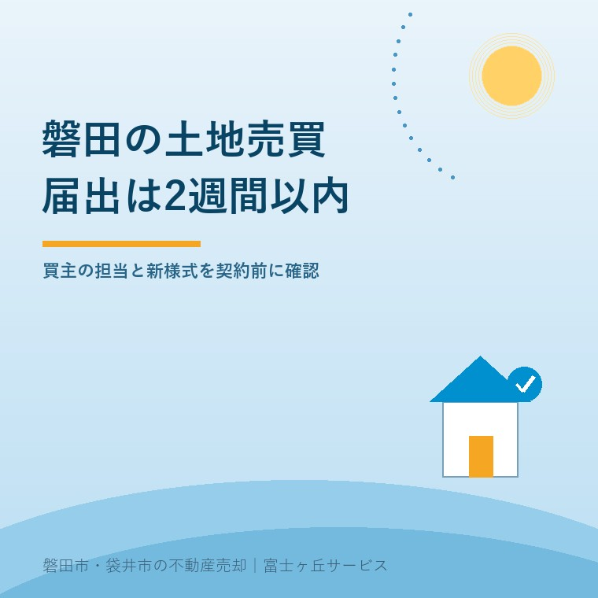
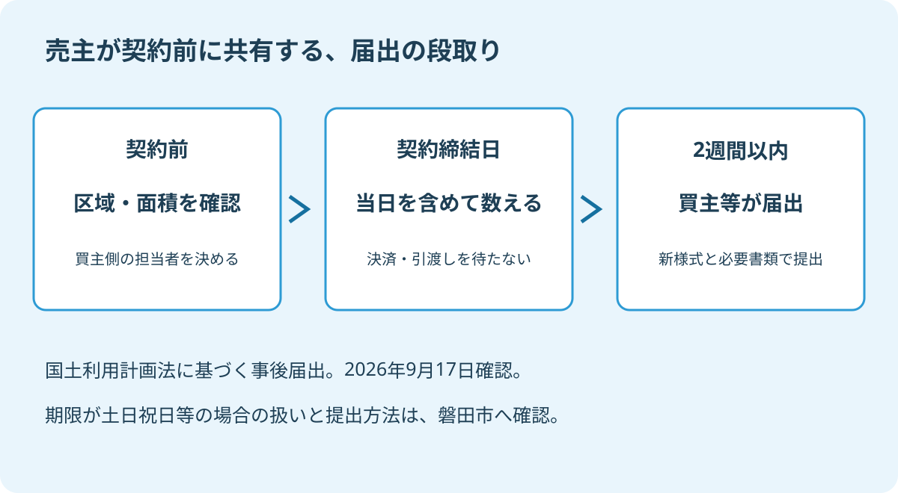

磐田市の土地売買届出｜契約後2週間の確認
2026年9月17日｜カテゴリ：磐田市・土地売買実務

この記事の要点
Q. 広い土地を売ります。市への届出は引渡しの後でよいですか。
磐田市で対象の土地売買をした場合、買主等が契約締結日を含めて2週間以内に届け出ます。引渡し後まで待ちません。区域・面積と担当者を契約前に確認し、2026年4月以降は新様式を使います。磐田市・袋井市・森町では、介護施設の運営から不動産事業を始めた富士ヶ丘サービスのような地域密着の会社に相談する選択肢があります。また、秋の帰省時の空き家・境界確認については秋彼岸の空き家見守り｜草刈りと境界確認から始める売却相談で整理しています。
広い土地の売買契約がまとまり、残代金の受取りや境界の確認を待っている。その間に、市への届出期限が来る場合があります。「土地を渡してから役所の手続き」と考えると、国土法の事後届出では順番が合いません。
大石浩之（磐田市／不動産業）です。宅地建物取引士として私は、売主に届出の仕事を全て背負わせたいわけではありません。義務を負う人と、資料をそろえる人、期限を確かめる人が誰なのか。契約前に見える状態にしておきたいと考えます。
磐田市の届出は、買主が契約日から数える
磐田市で一定規模の土地取引をした場合、国土利用計画法に基づく事後届出が必要です。磐田市「大規模な土地の取引」は、届出者を土地の権利を取得した買主等とし、期限を契約締結日を含めて2週間以内と案内しています。2026年9月17日に確認しました。
この届出は、土地を取得した後の利用目的などを伝える手続きです。売買では買主側の義務となり、売主が自分の売却を一律に届け出る仕組みではありません。届出書を代わりに準備する人がいても、誰の届出なのかを曖昧にしないでください。
起点は契約締結日です。残代金を払う決済日や、土地を渡す引渡し日ではありません。契約から決済まで間が空く取引でも、届出だけは先に進むことがあります。「事後」という名前でも、全ての売却手続きが終わった後という意味にはなりません。
日数は契約日を含めて数えます。静岡県の案内では、2週間目の日が土日祝日等の休日なら、次の開庁日が期限です。郵送などの受付方法も含め、実際の契約日に即した期限を市へ確かめます。家族の予定表には、期限だけでなく、それより前の提出予定日を書きます。
静岡県の2026年4月1日更新の案内では、県内は全て事後届出制の区域とされています。ただし、国土法の届出が契約後だからといって、土地に関する別の許可や届出まで全て後回しにできるわけではありません。売却前の調査は、それぞれの手続きに分けて行います。
面積基準は3区分、一団の土地も確認する
静岡県が示す届出面積の基準は、市街化区域で2,000㎡以上、市街化調整区域または非線引きの都市計画区域で5,000㎡以上、都市計画区域外で10,000㎡以上です。広いか狭いかという印象ではなく、土地の区域と面積を組み合わせて確認します。
| 土地の区域 | 届出の面積基準 |
|---|---|
| 市街化区域 | 2,000㎡以上 |
| 市街化調整区域・非線引きの都市計画区域 | 5,000㎡以上 |
| 都市計画区域外 | 10,000㎡以上 |
基準は「以上」なので、市街化区域で2,000㎡ちょうどの土地も対象に含まれます。土地の区域が分からない場合は、所在地と地番を用意して磐田市へ確認してください。地番は登記などで土地を特定する番号で、普段使う住所とは区別します。
市街化調整区域の実家を売る場合は、市街化調整区域の実家売却も合わせて確認します。届出の面積基準と、建物を建てたり使ったりできる条件は別です。国土法の面積だけを満たさないから何も調べなくてよい、とは考えません。
もう一つの見落としが「買いの一団」です。磐田市の案内は、一つずつの土地が基準未満でも、買主が取得する一団の土地の合計が基準以上となる場合には届出が必要としています。売主が自分の契約書の面積だけを見て、不要と結論を出せない場合があります。
例えば、市街化区域で1,200㎡と900㎡を一団の土地として同じ買主が取得する設例なら、合計は2,100㎡です。各土地は2,000㎡未満でも、合計では基準を超えます。これは説明用の計算で、実在の取引ではありません。一団に当たるかは取得計画を示して市に確認します。
広い土地を分筆して売る方法を選んでも、登記上の区画を分けたことだけで届出が不要になるわけではありません。分筆は一つの土地を登記上分ける手続きです。買主の取得範囲という別の確認を残しておきます。
2026年4月以降の届出は、新様式を使う
静岡県は、国土利用計画法施行規則の改正に伴い、2026年4月1日以降に届け出る場合は新様式が必要としています。契約が2026年3月31日以前でも、届出が4月1日以降なら新様式です。切替えの基準は契約日ではなく届出日です。
過去の取引で使った届出書が手元にあっても、そのまま複製して使う前に、磐田市の案内から様式を取り直します。書類を準備する担当者には、誰がいつ取得した様式かが分かる状態にしてもらいます。紙の書式だけでなく、電子申請の入口も市の案内から確認できます。
私は、磐田市が必要書類と提出方法を同じページに示している点を評価します。窓口への持参、郵送、電子申請の選択肢があり、遠方に住む家族でも、買主側の担当者と同じ案内を見ながら準備を進められるからです。
そのうえで実務を担う側には、「様式を渡したので終わり」にしないでほしい。私はそう考えます。新しい紙でも、添付資料と委任の段取りが決まらなければ提出できません。更新された様式を使うことと、期限内に提出を終えることを一続きの仕事にしたいのです。
磐田市の案内には、土地売買等届出書のほか、位置図、地形図、公図の写し、売買契約書の写しなどが挙がっています。業者等に委任する場合は委任状も必要です。実測面積で契約した場合の図面など、条件によって加わる資料も担当者に確認します。
面積の資料を整理するときは、公簿売買と実測売買の違いを確認してください。登記に載る面積と、測量した面積が並んでいたら、どちらを契約で使うのかを曖昧にしないことです。売主の感覚で届出書の数字を選び直す必要はありません。
売主は、買主の担当者と提出予定日を確かめる
土地売買等届出について売主が契約前に確認するのは、買主側の担当者、対象面積の判断、提出予定日、資料の受渡し先です。買主に代わって義務を負うという意味ではなく、取引の中で必要な協力を滞らせないための確認です。
私は、買主の義務だから知らない、では売主の段取りは済まないと考えます。契約書の写しや土地の資料を求められたとき、誰へ何を渡すかが決まっていれば動けます。売主の責任を広げるより、役割を言葉にして分ける方が家族を守れます。

確認の言い方は、「今回の土地は届出対象ですか。買主側では誰が、いつ、どの方法で提出しますか」で足ります。対象外という回答なら、区域・面積・一団の土地のどの条件を確認したのかも聞いておきます。仲介会社の説明と、市へ照会した結果を記録します。
私にも迷いがあります。売主家族に買主側の手続きまで追ってもらうと、仕事を増やしてしまう。しかし、担当者が決まっているかだけは契約前に確かめたい。私は書類作成の肩代わりを求めるのではなく、連絡相手と提出予定を一度共有するところを着地点にします。
提出後は、買主側の担当者から完了の連絡を受ける段取りにしておきます。控えや受付が分かる記録の管理は担当者と相談します。売主が保管する場合も、不要な個人情報まで複製せず、確認に必要な範囲を決めて受け取ります。
磐田の土地売却で今日そろえる3つの資料
磐田市の広い土地を売る所有者が今日そろえたいのは、地番が分かる資料、面積が分かる資料、契約の予定が分かるメモです。市の都市計画課と仲介会社へ同じ土地の話をするための土台になります。
- 登記事項証明書などで、売却対象の地番を並べる。
- 登記や測量の面積と、区域の確認状況を整理する。
- 契約予定日と、買主側の届出担当・提出予定日を書く。
区域をまたぐ土地や買主の取得計画が分からない場合は、家族だけで結論を出さず、市へ確認する項目として残します。届出書を完成させることより先に、対象かどうかを判断できる資料をそろえる順番です。
富士ヶ丘サービスは、磐田・袋井に根ざし、介護と不動産を一体で相談できる窓口を設けています。施設入居後の実家に広い土地が付く場合も、家族が困らない売却のために、契約後に誰が動くかまで整理します。私は契約を急がせず、期限のある手続きを先に見える形にして案内します。届出の適用は市の担当課へ、税務・登記・相続の個別判断は専門家に確認を。
よくある質問
売却の準備で確かめたい疑問に答えます。
- 磐田市で土地を売ったとき、届出をするのは売主ですか。
- 国土利用計画法に基づく事後届出は、土地の権利を取得した買主等が行います。売主が一律に届出義務者になるわけではありません。ただし、契約前に仲介会社を通じ、買主側の担当者、提出予定日、必要な資料を確認しておくと段取りを共有できます。業者等に委任する場合は、磐田市の案内では委任状が必要です。
- 2週間は、代金の決済や引渡しの日から数えますか。
- 磐田市の案内は、契約締結日を含めて2週間以内としています。残代金の決済や土地の引渡しを待って数えるものではありません。契約前に届出担当者と予定を共有し、期限を確認してください。静岡県は、期限が土日祝日等に当たる場合は次の開庁日と案内しています。実際の提出期限や受付方法は市の担当課に確認します。
- 市街化区域で2,000㎡未満なら、届出は不要ですか。
- 単独の面積だけでは判断しません。市街化区域の基準は2,000㎡以上ですが、買主が取得する一団の土地の合計が基準以上になる場合も届出が必要です。分筆した自分の土地が基準未満でも、買主の取得計画を確認します。区域をまたぐ場合なども市に照会し、国土法以外の許可や届出とは分けて整理してください。

この記事を書いた人：大石浩之（磐田市／不動産業・宅地建物取引士）
富士ヶ丘サービス株式会社。介護施設の運営から不動産事業を始め、磐田市・袋井市・森町で、介護と相続、実家の売却を一体で相談できる窓口を設けています。家族が困らない売却のため、資料と現地の条件を一件ずつ整理します。著者プロフィール
本記事は2026年9月17日時点の公開情報と筆者の意見です。制度・料金・手続きは変更されることがあります。具体的な作業費用や取引条件は依頼先に確認してください。税務・登記・相続の個別判断は、税理士・司法書士などの専門家に確認を。